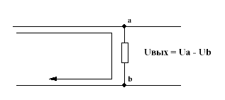
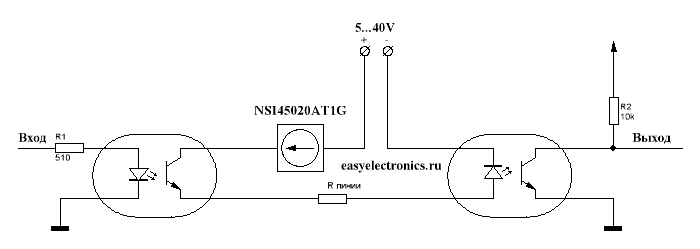
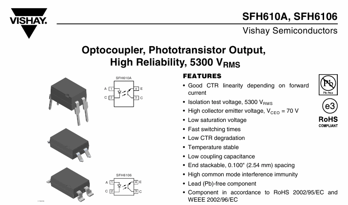
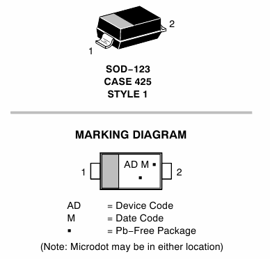
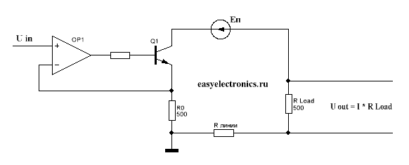
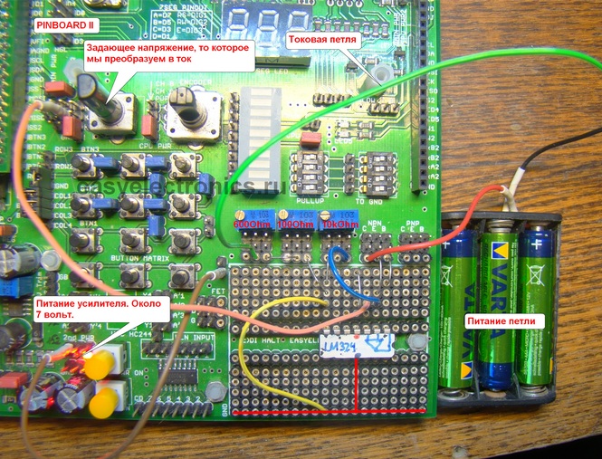
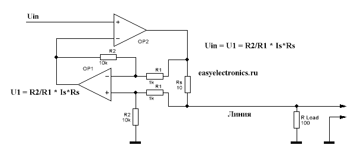
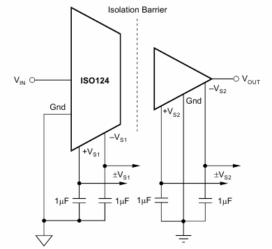

Токовая петля
Иногда приходится передавать сигнал на большое расстояние (десятки метров, а то и километры). Главная проблема при этом в том, что через линию может пронестись электромагнитная волна (помеха) и попытаться индуцировать в ней ток. Ток будет мизерным, но так как входы обычно высокоомные, в сотни килоом, то даже от таких незначительных наводок на входе может возникнуть перенапряжение. Ведь по закону Ома U = I * R. R входа у нас может быть и под ГигаОм, при этом наводка тока даже в 0.001мА может раскачать напругу до киловольта. Вход вынесет за милую душу, хотя энергия там и невелика, но много ли надо тонкопленочному затвору транзистора? Решение тут одно — снижать входное сопротивление.
Хорошим способом решение этой проблемы является смена сигнала с напряжения, на ток. Т.е. за уровни мы принимаем не наличие каких-либо напряжений, а значения тока в цепи. Навести помеху тут будет сложней, ведь два провода линии идут параллельно, а значит помеха будет наводиться в них одновременно и гасить сама себя, вычитаясь на дифференциальном входе приемника.

Ток будем вдувать в линию посредством источника тока, радующего нас тем, что ему плевать какое сопротивление у линии, он будет обеспечивать заданный ток до тех пор, пока мощи хватит.
Цифровая линия
Тут все просто, обычно по токовой петле развязывают RS232 и им подобные интерфейсы с независимыми каналами на прием/передачу. Плюсом токовой петли является то, что она легко развязывается оптикой, ведь светодиод, являющийся основным передатчиком оптопары, питается током.
Схема может выглядеть следующим образом:

Когда подаем единичку на вход, то она зажигает светодиод, транзистор оптопары открывается и пускает ток в петлю. Это ток зажигает светодиод во второй оптопаре, ее транзистор открывается и прижимает линию к земле. Линия при этом получается инвертирующейся. Но при желании это легко решается одним транзистором.
Оптопарой тут можно выбрать что то вроде SFH610A:

Главное, чтобы предельное напряжение, которое может выдержать транзистор, было выше чем может развить источник тока, ведь он будет пытаться продавить транюзк когда тот закрыт. Для данной оптопары это Vceo = 70V. Обычно же напряжение источника редко превышает 24 вольта. А также следует поглядеть на ток колектора для оптопары, чтобы он был не меньше, чем выдает источник тока. Для данной оптопары он составляет 50мА.
Если еще взять источник питания линии внешний, то схема получается вообще неубиваемой. Т.к. приемник, передатчик и линия не связаны между собой вообще.
В качестве источника тока я обычно втыкаю тут NSI45020. Вообще это линейный драйвер светодиодов. Фиговина размером с резистор 1206, на выходе имеет строго заданный ток — 20мА.

Можно вкатывать напряжение питания вплоть до 45 вольт, можно параллелить, чтобы ток был поболее. При цене в 5 рублей штука — очень клевая вещь. Рекомендую держать в хозяйстве.
А для консерваторов — LM317 в режиме стабилизатора тока еще никто не отменял. Правда гораздо более громоздко выходит и стоит обычно дороже. Зато достается без проблем в любом радио ларьке.
Недостаток оптической развязки — ограничение скорости. У оптопары, особенно ширпотребной, весьма посредственные частотные характеристики. Но для какого-нибудь UART хватит. Также на скорость влияет тот факт, что длинная линия обладает большой емкостью, а зарядка ее происходит источником тока, т.е. чем дальше, тем больше емкость линии и медленней передача.
Аналоговая линия
А если надо вытащить данные с какого-нибудь удаленного аналогового датчика? Тут тоже на помощь придет токовая петля, правда конструкция будет несколько сложней.
Нам нужно будет сделать источник, превращающий напряжение в ток. С линейной зависимостью, скажем вкатили мы на вход 5 вольт, а наша схема вдула в линию 50мА. Делается это на операционном усилителе. Примерно вот по такой схеме:

Работает она просто. Т.к. ОУ, охваченный обратной связью, стремиться уравнять свои входы, т.е. напряжение между прямым и инверсным входом равно нулю, то можно считать, что Uin засажен напрямую на R0. И ток через R0 получается равным Uin/R0. Ведь сопротивление входов ОУ ОЧЕНЬ большое, настолько большое, что мы можем смело считать, что ток туда не втекает. А так как R0 часть петли, то ток в петле будет равен току R0, вне зависимости от сопротивления линии и сопротивления нагрузки, разумеется если источник питания может продавить эти сопротивления, а транзистор не выходит в насыщение, оставаясь в линейном режиме. В качестве источника питания тут можно взять независимый стабилизированный источник, вольт так на 12.
На другой стороне петли достаточно снять падение напряжения на резисторе нагрузки Rн.
Вот тут, ради лулзов, собрал на макетном поле Pinboard II эту конструкцию. Т.к. задающий резистор R0 у меня получился в 10кОм (такой стоит рядом с макетным полем), то соотношение напряжение/ток получилось 1:10000 т.е. на 1 вольт приходится 0.1мА в петле. Нифига не стандарт, да и вообще мало слишком, но принцип работы показывает хорошо.

Есть более громоздкий, но и гораздо более точный способ:

Тут мы заводим специальный измерительный резистор Rs и на нем операционником замеряем падение, а потом результат загоняем во второй операционник. Т.к. конструкция из OP1 является для OP2 обратной связью, а он выводит разность на своих входах в ноль, то получаем, что:
Uin = R2/R1*Is*Rs
При
R2 = 10k
R1 = 1k
Rs = 10
Получаем зависимость Is = Uin/100 с хорошей такой линейностью, особенно если взять прецезионные усилки с Rail-2-Rali выходом.
Если нужна максимальная точность, то лучше применить готовую микросхему. Существует и масса спекциализированных формирователей токовой петли. Например MAX15500. Включаешь по даташиту и радуешься :)
Гальваническую развязку аналоговой токовой петли можно сделать на изолирующих усилителях. Вроде ISO124:

Коэффициент усилениея у него 1. Т.е. 1 вольт вошел — 1 вышел. Никаких заморочек с обратной связью и прочим. Два независимых входа питания, с одной и с другой стороны. Один недостаток — стоит она недешево. Та же ISO124 от 15 баксов за штуку.
Также прикольное свойство токовой петли в том, что можно питать удаленное устройство через эту же петлю. Т.к. источник тока компенсирует потребление. Разумеется в разумных пределах, но для каких-нибудь датчиков удаленных вполне неплохой вариант.
Стандарты
Единого стандарта на токовую петлю, величины токов и разьемы, как например с RS232, нет. Но в промышленности более менее устоялся стандарт аналоговой токовой петли 4…20мА, т.е. минимальный уровень это 4мА, а максимальный 20мА. Нулевой ток считается обрывом линии. Для цифровой петли чаще применяют диапазон 0…20мА. Также иногда встречается вариант 0…60мА, но это экзотика.